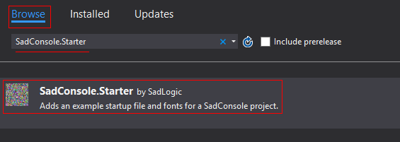
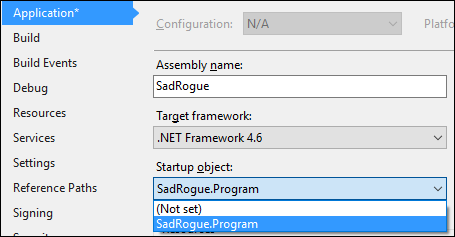
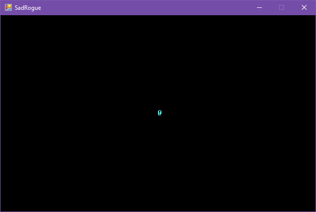

Roguelike Tutorial - Part 1 - Character and Map
In this series of tutorials we’ll look at creating a roguelike while using SadConsole. SadConsole is a .NET library that works with MonoGame to create a tile based game. The focus of SadConsole though is to treat the tile system like a classic terminal or command prompt system.
In this article we’ll accomplish the following:
- [x] Create a new project in Visual Studio.
- [x] Add SadConsole to the project.
- [x] Display a character on the screen.
Tutorial index
- Part 1 - Create the project
- Part 2 - Character and map
Create the SadConsole project
You need to create a new blank .NET project in Visual Studio. You can use C# or VB.NET and probably any other .NET compatible language.
-
Create a new Empty Project (of your language choice, the tutorial uses C#).
This creates a project that has little-to-no references on external libraries and doesn’t create a default code file.
-
Right-click on the project that was created and click Manage NuGet Packages…
-
Click the Browse tab and then type in
sadconsoleinto the search box. -
Select and install the
SadConsole.StarterNuGet package.
NOTE
You can close the NuGet SadConsole Starter page that pops up, we’re going to do all of the steps described by the starter page here.This package will add a program-example.cs to your project, delete it.
-
Search for
monogame.frameworkand install (most likely) eitherMonoGame.Framework.WindowsDXfor DirectX orMonoGame.Framework.DesktopGLfor OpenGL.IMPORTANT
If you chose the DesktopGL library, you need to add reference to SDL2.dll. Currently the MonoGame NuGet library is not providing this dll. There is a copy here.- Download this file and copy it to the root of your project.
- Right-click the Project > Add > Reference….
- Click Browse
- Navigate to the dll file and select it.
-
Close the NuGet tab.
-
Right-click on the project in the Solution Explorer and choose Properties.
-
Change your assembly name and default namespace to something more friendly. For example, I’m going to choose SadRogue for both.
-
Change the Output type from Console Application to Windows Application.
-
Save the project.
-
Right-click on the project and click Add > Class…
-
Name the class Program.cs and click Add.
-
Replace the generated
Programclass (not the generated namespace though) with the following:1
2
3
4
5
6
7
8
9
10
11
12
13
14
15
16
17
18
19
20
21
22
23
24
25
26
27
28
29
30
31
32
33
34
35
36
37
38
39
40using System;
using Console = SadConsole.Console;
public const int ScreenWidth = 80;
public const int ScreenHeight = 25;
namespace SadRogue
{
class Program
{
static void Main(string[] args)
{
// Setup the engine and create the main window.
SadConsole.Game.Create("IBM.font", ScreenWidth, ScreenHeight);
// Hook the start event so we can add consoles to the system.
SadConsole.Game.OnInitialize = Init;
// Hook the update event that happens each frame so we can trap keys and respond.
SadConsole.Game.OnUpdate = Update;
// Start the game.
SadConsole.Game.Instance.Run();
// Clean up
SadConsole.Game.Instance.Dispose();
}
private static void Update(GameTime delta)
{
}
private static void Init()
{
}
}
}NOTE
The namespace for the class should be what you entered in step 8. -
Save Program.cs and go back to the project properties window (step 7).
-
Click the Startup object drop down and choose your program class. (You may need to compile first)

-
Save the project.
-
Compile and run.
When the game runs you’ll see a blank black window show up. The SadConsole window clears the screen black by default (since a terminal is generally black). Our screen was sized to what our font was using. The IBM font we have uses characters that are 8px x 16px in size. We told the game window to be 80 x 24 of those cells.
Handle some global keyboard hooks
The Update method is called once per game-frame. This is a good place to check the keyboard for some global states, like whenever you want to close the game or toggle full screen.
1 | private static void Update(GameTime time) |
Printing a game character
In the Init method we need to create a new console for SadConsole to use. In the center of it we’ll print a '@' character to simulate the player and then assign the console as the “current screen.”
1 | private static void Init() |
If you run the game, you’ll see an @ character in the middle of the screen.

Closing thoughts
We’ve initialized SadConsole and displayed a simple console with a character. Pretty simple huh? A few lines of code and we’re off and running.
In the next step of the tutorial we’ll create our own custom console and display a player character on it.